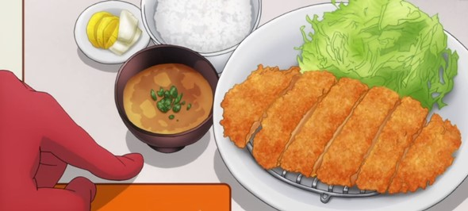

Tonkatsu

About the recipe
Tonkatsu is breaded and fried pork cutlets (ton meaning pork, and katsu being an abbreviations of the word English word cutlet).
Crispy out the outside, tender on the inside, and accompanied by refreshing raw cabbage and tangy tonkatsu sauce, this simple,
but comforting dish is perfect for any occasion.
Ingredients
- 1 lb pork tenderloin or center cut boneless pork chops
- 1/4 cup flour
- 1 Egg, whipped (add additional egg if needed)
- 1-2 cups panko or breadcrumbs
- Salt and pepper
- Oil for frying
Directions
- Cut and, if necessary, pound pork into desired thickness, between a half and three quarters of an inch thick.
- Place flour, whipped egg, and panko into three separate bowls. Into the flour, liberally mix in salt and pepper.
- Dredge each piece of pork in flour, then coat in the whipped egg, and lastly cover with panko, gently pressing the breadcrumbs into the wet egg to adhere.
- Heat a pan with oil on medium high. Fry the breaded pork until golden brown on both sides, and the pork is cooked through. Alternatively, deep fry the pork in a deep frier. Remove from the oil and place on a paper towel lined plate.
- Serve with rice, thinly sliced shredded cabbage, miso soup, and tonkatsu sauce.
Back to Home Page